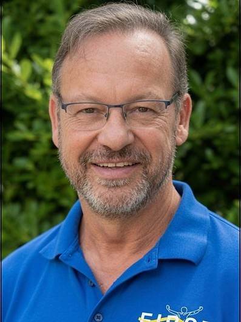
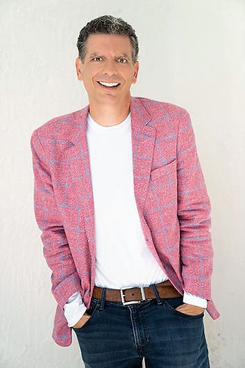

Real Conversations That Move You Forward
Dr. Dave Kashuba and Mike McGann cover the world of physical rehab and wellness — with some of the sharpest minds in medicine.
Latest Episode
Dr. Richard Weiner, M.D.
World-renowned orthopedic surgeon Dr. Richard Weiner joins Dave and Mike for a candid conversation about joint replacement, staying active as you age, and what it really takes to get patients moving pain-free again. With more than 35 years in practice and thousands of hip and knee replacements to his name, Dr. Weiner brings a uniquely technical eye to orthopedic care — shaped by his training in both engineering and medicine at the University of Pennsylvania. A must-listen for anyone considering surgery or determined to avoid it.
Dave & Mike

Dave Kashuba, Ph.D.
Founder of First Rehabilitation and a practicing occupational therapist, Dave has personally guided the care of more than 180,000 patients over 39+ years, bringing a lifetime of hands-on experience to every conversation about healing and resilience.

Mike McGann
Co-host Mike McGann brings more than 17 years on the Palm Beach County airwaves to the show. He's hosted music and talk programs of nearly every style and now calls Legends 100.3 home — and a lifelong love of the Great American Songbook, sparked by his mom and a little Sinatra at age seven, gives him a storyteller's ear that's perfect for drawing out every guest's journey.
Listen & Subscribe
Logan Van Sant, DPT
Doctor of Physical Therapy Logan Van Sant sits down to share what modern physical therapy really looks like — beyond the stretches and exercises most people expect. Logan digs into how the right movement, at the right time, restores strength and confidence after injury, and why the therapist-patient relationship is at the heart of every successful recovery. A genuine wealth of knowledge from one of the sharp young minds shaping PT today.
Kayla Dorsey, DPT & Dr. Murray Goldberg, M.D.
A double-header of expertise. Kayla Dorsey, a Doctor of Physical Therapy with over a decade of hands-on experience, unpacks how personalized, one-on-one care changes recovery outcomes. Then Dr. Murray Goldberg — a board-certified urologist serving Palm Beach County since 1991 — joins to discuss men's health, aging well, and why staying proactive about your body pays off for decades. Two perspectives, one theme: taking ownership of your health.
Dr. Timur Urakov, M.D.
Spine surgery, demystified. Dr. Timur Urakov, Associate Professor of Clinical Medicine at the University of Miami, joins the show to explain how today's spine care has changed — from minimally invasive techniques to the advanced surgical technology now used to treat conditions along the entire spine. He and Dave tackle the questions patients are most afraid to ask about back and neck surgery, and when it is (and isn't) the right call.
Dr. Tom Saylor, M.D.
The hand is the body's most intricate tool — and repairing it takes a specialist. Hand and upper-extremity surgeon Dr. Tom Saylor joins Dave and Mike to talk about the surgical side of restoring hand function, from carpal tunnel and tendon repairs to complex reconstruction. It's a natural fit for First Rehabilitation, home to a certified hand therapy program, and a fascinating look at how surgeon and therapist work hand-in-hand to bring patients back to full function.
Intro to Dave's Background
The one that started it all. In this first episode, Dr. Dave Kashuba tells his story — how he built First Rehabilitation of North Palm Beach from the ground up in 1991, what nearly four decades and 180,000+ patients have taught him about healing, and the philosophy behind the name Pain 2 Power. Co-host Mike McGann draws out the moments that shaped Dave's approach to care, resilience, and why “our people make the difference” is more than a tagline.
Life is too short to live in pain.
Start your recovery today with a team dedicated to your long-term wellness and total healing.
Start Your Recovery Today →